대학 학사 업무의 핵심 개체인 학과·교수·학생·강의·수강신청을 정규화된 관계형 모델로 설계하고, PostgreSQL 위에 DB 생성 → 스키마 → DDL → DML → 조회까지 직접 구축한다.
무결성 설계 원칙
CURRENT_DATE, 학적 기본값 '재학' 등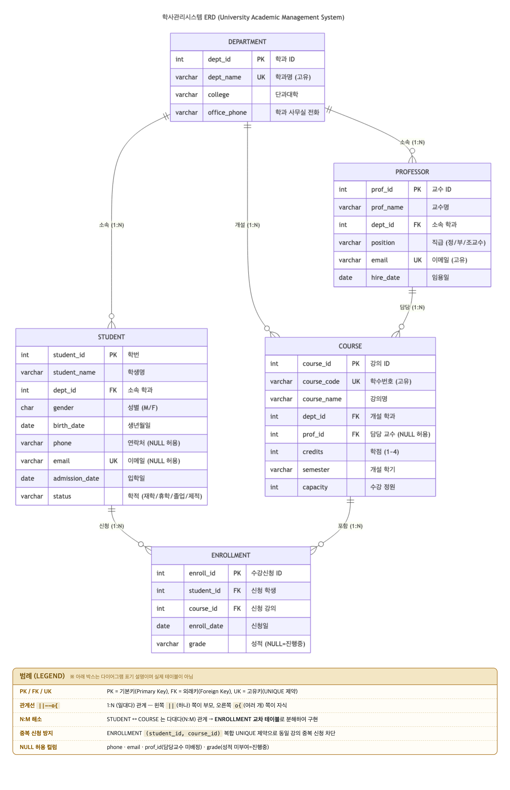
5개 엔티티(학과·교수·학생·강의·수강신청)의 관계선이 서로 겹치지 않도록 배치. 다이어그램 하단의 범례(LEGEND) 박스에 PK/FK/UK 표기법, 관계선(||--o{ = 1:N) 의미, N:M 교차테이블 해소 방식, 중복신청 방지·NULL 허용 제약을 설명문으로 명시.
| 설치 | brew install postgresql@17 → 버전 17.10 (Homebrew) |
|---|---|
| 서비스 | brew services start postgresql@17 |
| 포트 | 5433 — 이 머신에 시스템 PostgreSQL 18이 5432를 사용 중이라 충돌 방지를 위해 postgresql.conf에서 5433으로 분리 |
| 비밀번호 | ALTER USER nys WITH PASSWORD '****'; 로 계정 비밀번호 지정 (필수) |
| DB / Schema | university / academy |
psql -p 5433 university 접속 후 \conninfo · \dn · \dt academy.* (docs/00_conn.png)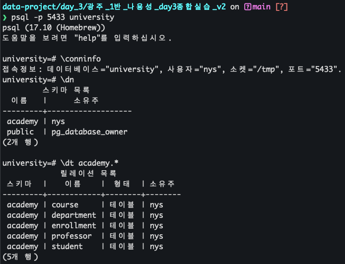
FK 참조 순서를 고려해 department → professor → student → course → enrollment 순으로 생성.
CREATE TABLE department (
dept_id SERIAL PRIMARY KEY,
dept_name VARCHAR(50) NOT NULL UNIQUE, -- 학과명 (고유)
college VARCHAR(50) NOT NULL, -- 단과대학
office_phone VARCHAR(20) -- 사무실 전화 (NULL 허용)
);
CREATE TABLE professor (
prof_id SERIAL PRIMARY KEY,
prof_name VARCHAR(30) NOT NULL,
dept_id INT NOT NULL REFERENCES department(dept_id),
position VARCHAR(10) NOT NULL DEFAULT '조교수'
CHECK (position IN ('정교수', '부교수', '조교수')),
email VARCHAR(100) NOT NULL UNIQUE,
hire_date DATE NOT NULL DEFAULT CURRENT_DATE
);
CREATE TABLE student (
student_id SERIAL PRIMARY KEY, -- 학번
student_name VARCHAR(30) NOT NULL,
dept_id INT NOT NULL REFERENCES department(dept_id),
gender CHAR(1) CHECK (gender IN ('M', 'F')),
birth_date DATE,
phone VARCHAR(20), -- NULL 허용
email VARCHAR(100) UNIQUE, -- NULL 허용
admission_date DATE NOT NULL DEFAULT CURRENT_DATE,
status VARCHAR(10) NOT NULL DEFAULT '재학'
CHECK (status IN ('재학', '휴학', '졸업', '제적'))
);
CREATE TABLE course (
course_id SERIAL PRIMARY KEY,
course_code VARCHAR(10) NOT NULL UNIQUE, -- 학수번호
course_name VARCHAR(50) NOT NULL,
dept_id INT NOT NULL REFERENCES department(dept_id),
prof_id INT REFERENCES professor(prof_id), -- 미배정 가능(NULL)
credits INT NOT NULL DEFAULT 3 CHECK (credits BETWEEN 1 AND 4),
semester VARCHAR(20) NOT NULL,
capacity INT NOT NULL DEFAULT 40 CHECK (capacity > 0)
);
CREATE TABLE enrollment (
enroll_id SERIAL PRIMARY KEY,
student_id INT NOT NULL REFERENCES student(student_id),
course_id INT NOT NULL REFERENCES course(course_id),
enroll_date DATE NOT NULL DEFAULT CURRENT_DATE,
grade VARCHAR(2) CHECK (grade IN ('A+','A','B+','B','C+','C','D+','D','F')),
CONSTRAINT uq_enroll_student_course UNIQUE (student_id, course_id) -- 중복신청 방지
);
psql -p 5433 university -f sql/03_ddl_create_table.sql (docs/01_ddl.png)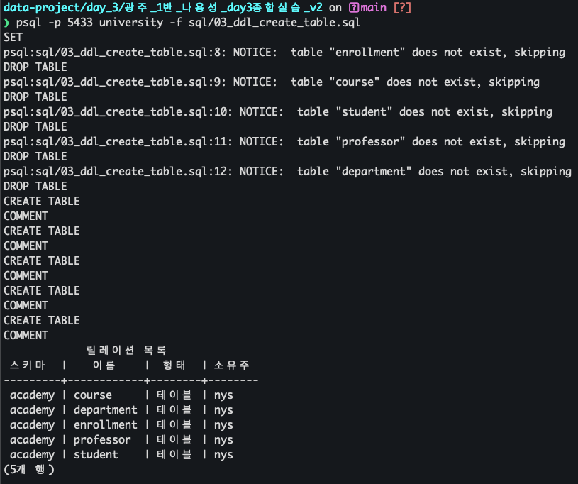
모든 테이블 10건 이상 입력 (department 10 · professor 12 · student 15 · course 12 · enrollment 26, 총 75건). NULL 값을 일부 포함해 COALESCE 실습이 가능하도록 구성.
psql -p 5433 university -f sql/04_dml_insert.sql (docs/02_dml.png)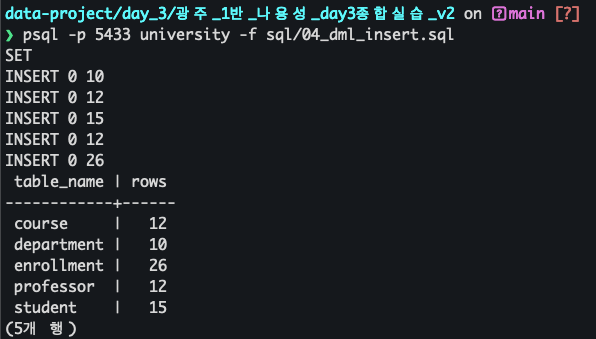
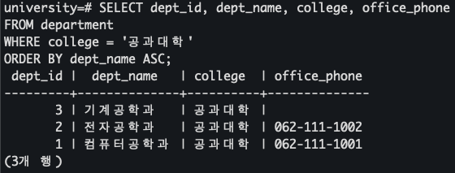
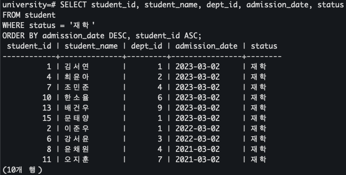
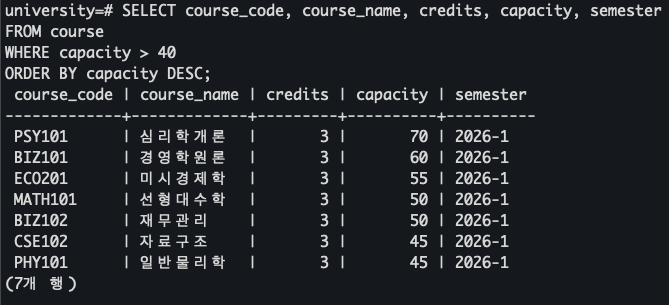
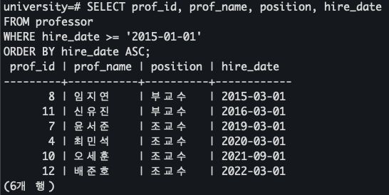
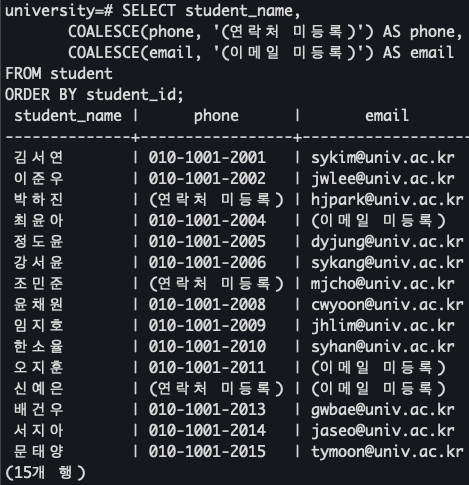
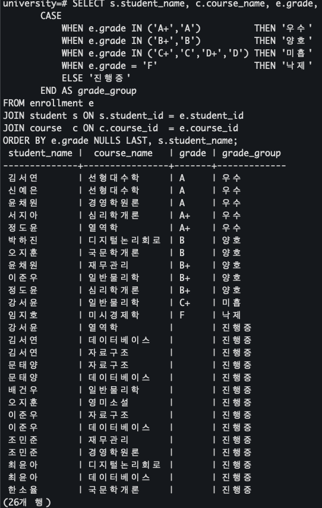
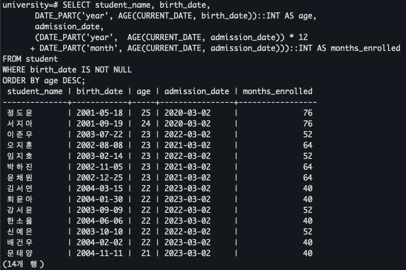
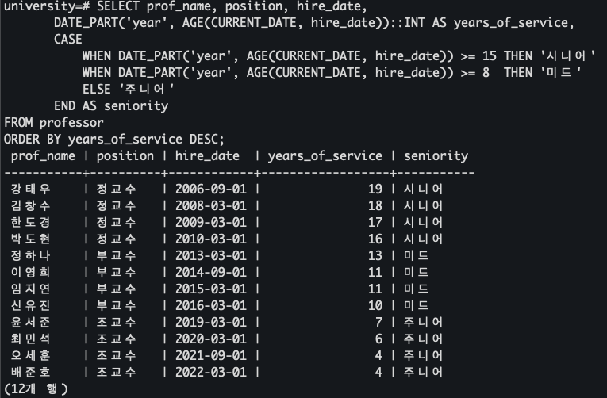
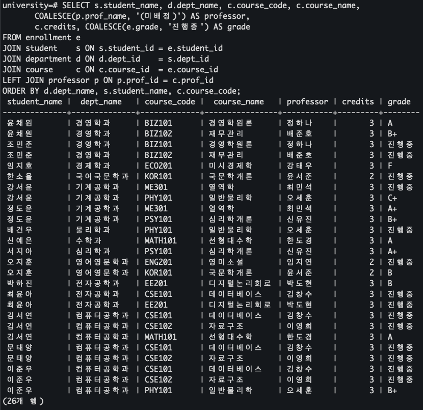
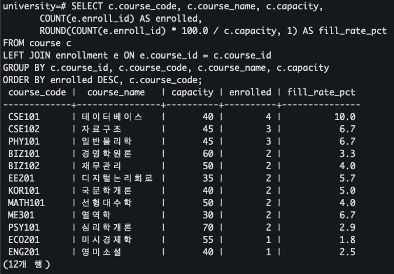
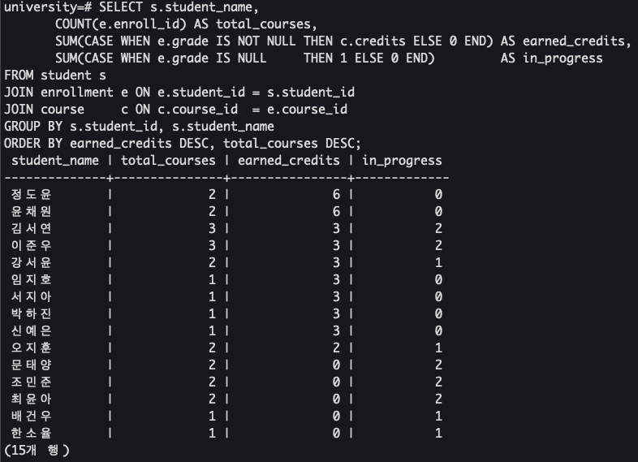
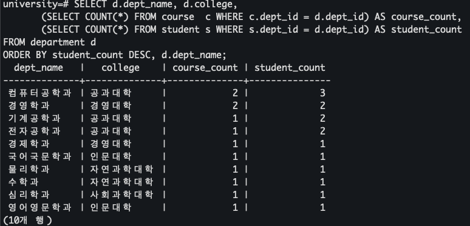
— 이상으로 학사관리시스템 DB 설계(ERD) → 구축(DDL/DML) → 조회(WHERE·함수·CASE WHEN·JOIN) 종합실습을 완료함. 모든 결과 화면은 직접 실행 후 캡처하였으며(docs/), 재현용 SQL은 sql/, 실행 로그 텍스트는 results/ 폴더에 포함.